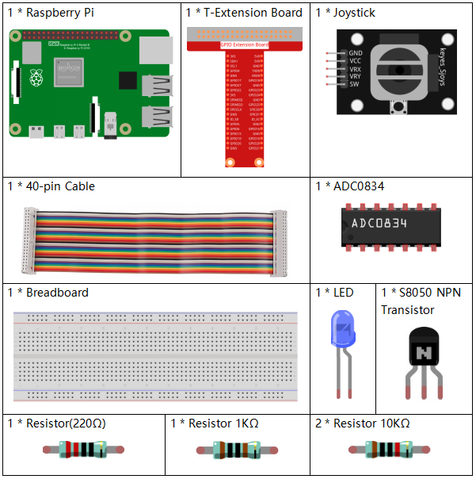
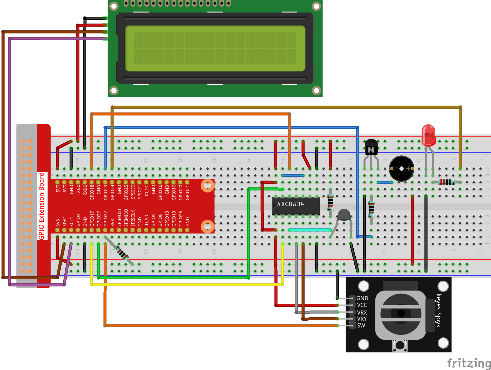

Nota
Hola, ¡bienvenido a la Comunidad de Entusiastas de SunFounder Raspberry Pi & Arduino & ESP32 en Facebook! Sumérgete más profundamente en Raspberry Pi, Arduino y ESP32 junto con otros entusiastas.
¿Por qué unirse?
Soporte experto: Resuelve problemas posventa y desafíos técnicos con la ayuda de nuestra comunidad y equipo.
Aprende y Comparte: Intercambia consejos y tutoriales para mejorar tus habilidades.
Avances exclusivos: Obtén acceso anticipado a anuncios de nuevos productos y adelantos.
Descuentos especiales: Disfruta de descuentos exclusivos en nuestros productos más recientes.
Promociones y sorteos festivos: Participa en sorteos y promociones de temporada.
👉 ¿Listo para explorar y crear con nosotros? ¡Haz clic en [Aquí] y únete hoy!
3.1.8 Monitor de Sobrecalentamiento
Introducción
Podrías querer crear un dispositivo de monitoreo de sobrecalentamiento que se aplique a diversas situaciones, por ejemplo, en una fábrica, si se necesita una alarma y el apagado automático oportuno de una máquina cuando hay sobrecalentamiento en el circuito. En esta lección, usaremos un termistor, un joystick, un zumbador, un LED y una pantalla LCD para crear un dispositivo inteligente de monitoreo de temperatura cuyo umbral es ajustable.
Componentes

Diagrama de Esquema
T-Board Name |
physical |
wiringPi |
BCM |
GPIO17 |
Pin 11 |
0 |
17 |
GPIO18 |
Pin 12 |
1 |
18 |
GPIO27 |
Pin 13 |
2 |
27 |
GPIO22 |
Pin15 |
3 |
22 |
GPIO23 |
Pin16 |
4 |
23 |
GPIO24 |
Pin18 |
5 |
24 |
SDA1 |
Pin 3 |
||
SCL1 |
Pin 5 |

Procedimiento Experimental
Paso 1: Construir el circuito.
{kind=link}
Para Usuarios de Lenguaje C
Paso 2: Ve a la carpeta del código.
cd ~/davinci-kit-for-raspberry-pi/c/3.1.8/
Paso 3: Compila el código.
gcc 3.1.8_OverheatMonitor.c -lwiringPi -lm
Paso 4: Ejecuta el archivo compilado.
sudo ./a.out
Al ejecutarse el código, se muestra en la I2C LCD1602 la temperatura actual y el umbral de temperatura alta, que inicialmente es 40. Si la temperatura actual supera el umbral, el zumbador y el LED se activan para alertarte.
Nota
Si el programa no funciona después de ejecutarlo o aparece el mensaje de error: «wiringPi.h: No such file or directory», consulta c code is not working?.
Joystick aquí se utiliza para ajustar el umbral de temperatura alta. Al mover el Joystick en las direcciones de los ejes X o Y puedes ajustar (subir o bajar) el umbral de temperatura alta actual. Presiona el Joystick nuevamente para restablecer el umbral al valor inicial.
Explicación del Código
int get_joystick_value(){
uchar x_val;
uchar y_val;
x_val = get_ADC_Result(1);
y_val = get_ADC_Result(2);
if (x_val > 200){
return 1;
}
else if(x_val < 50){
return -1;
}
else if(y_val > 200){
return -10;
}
else if(y_val < 50){
return 10;
}
else{
return 0;
}
}
Esta función lee los valores de X y Y. Si X>200, devuelve «1»; si X<50, devuelve «-1»; si y>200, devuelve «-10», y si y<50, devuelve «10».
void upper_tem_setting(){
write(0, 0, "Upper Adjust:");
int change = get_joystick_value();
upperTem = upperTem + change;
char str[6];
snprintf(str,3,"%d",upperTem);
write(0,1,str);
int len;
len = strlen(str);
write(len,1," ");
delay(100);
}
Esta función permite ajustar el umbral y mostrarlo en la pantalla I2C LCD1602.
double temperature(){
unsigned char temp_value;
double Vr, Rt, temp, cel, Fah;
temp_value = get_ADC_Result(0);
Vr = 5 * (double)(temp_value) / 255;
Rt = 10000 * (double)(Vr) / (5 - (double)(Vr));
temp = 1 / (((log(Rt/10000)) / 3950)+(1 / (273.15 + 25)));
cel = temp - 273.15;
Fah = cel * 1.8 +32;
return cel;
}
Lee el valor analógico de CH0 (termistor) del ADC0834 y luego lo convierte en un valor de temperatura.
void monitoring_temp(){
char str[6];
double cel = temperature();
snprintf(str,6,"%.2f",cel);
write(0, 0, "Temp: ");
write(6, 0, str);
snprintf(str,3,"%d",upperTem);
write(0, 1, "Upper: ");
write(7, 1, str);
delay(100);
if(cel >= upperTem){
digitalWrite(buzzPin, HIGH);
digitalWrite(LedPin, HIGH);
}
else if(cel < upperTem){
digitalWrite(buzzPin, LOW);
digitalWrite(LedPin, LOW);
}
}
Al ejecutar el código, se muestra en la I2C LCD1602 la temperatura actual y el umbral de temperatura alta, que inicialmente es 40. Si la temperatura actual supera el umbral, el zumbador y el LED se activan para alertarte.
int main(void)
{
setup();
int lastState =1;
int stage=0;
while (1)
{
int currentState = digitalRead(Joy_BtnPin);
if(currentState==1 && lastState == 0){
stage=(stage+1)%2;
delay(100);
lcd_clear();
}
lastState=currentState;
if (stage==1){
upper_tem_setting();
}
else{
monitoring_temp();
}
}
return 0;
}
La función main() contiene el proceso completo del programa como se muestra a continuación:
1) Al iniciar el programa, el valor inicial de stage es 0, y la temperatura actual y el umbral de temperatura alta 40 se muestran en la I2C LCD1602. Si la temperatura actual supera el umbral, el zumbador y el LED se activan para alertar.
2) Al presionar el Joystick, stage cambiará a 1, y podrás ajustar el umbral de temperatura alta. Al mover el Joystick en las direcciones de los ejes X o Y, puedes ajustar (subir o bajar) el umbral actual. Presiona el Joystick nuevamente para restablecer el umbral al valor inicial.
Para Usuarios de Lenguaje Python
Paso 2: Ve a la carpeta del código.
cd ~/davinci-kit-for-raspberry-pi/python/
Paso 3: Ejecuta el archivo.
sudo python3 3.1.8_OverheatMonitor.py
Al ejecutar el código, la temperatura actual y el umbral de temperatura alta 40 se muestran en la I2C LCD1602. Si la temperatura actual supera el umbral, el zumbador y el LED se activarán para alertarte.
El Joystick se utiliza para ajustar el umbral de temperatura alta. Moviendo el Joystick en la dirección del eje X o Y puedes aumentar o disminuir el umbral de temperatura alta. Presiona el Joystick nuevamente para restablecer el umbral al valor inicial.
Código
Nota
Puedes Modificar/Restablecer/Copiar/Ejecutar/Detener el código a continuación. Pero antes, necesitas ir a la ruta del código fuente como davinci-kit-for-raspberry-pi/python.
import LCD1602
import RPi.GPIO as GPIO
import ADC0834
import time
import math
Joy_BtnPin = 22
buzzPin = 23
ledPin = 24
upperTem = 40
def setup():
ADC0834.setup()
GPIO.setmode(GPIO.BCM)
GPIO.setup(ledPin, GPIO.OUT, initial=GPIO.LOW)
GPIO.setup(buzzPin, GPIO.OUT, initial=GPIO.LOW)
GPIO.setup(Joy_BtnPin, GPIO.IN, pull_up_down=GPIO.PUD_UP)
LCD1602.init(0x27, 1)
def get_joystick_value():
x_val = ADC0834.getResult(1)
y_val = ADC0834.getResult(2)
if(x_val > 200):
return 1
elif(x_val < 50):
return -1
elif(y_val > 200):
return -10
elif(y_val < 50):
return 10
else:
return 0
def upper_tem_setting():
global upperTem
LCD1602.write(0, 0, 'Upper Adjust: ')
change = int(get_joystick_value())
upperTem = upperTem + change
strUpperTem = str(upperTem)
LCD1602.write(0, 1, strUpperTem)
LCD1602.write(len(strUpperTem),1, ' ')
time.sleep(0.1)
def temperature():
analogVal = ADC0834.getResult()
Vr = 5 * float(analogVal) / 255
Rt = 10000 * Vr / (5 - Vr)
temp = 1/(((math.log(Rt / 10000)) / 3950) + (1 / (273.15+25)))
Cel = temp - 273.15
Fah = Cel * 1.8 + 32
return round(Cel,2)
def monitoring_temp():
global upperTem
Cel=temperature()
LCD1602.write(0, 0, 'Temp: ')
LCD1602.write(0, 1, 'Upper: ')
LCD1602.write(6, 0, str(Cel))
LCD1602.write(7, 1, str(upperTem))
time.sleep(0.1)
if Cel >= upperTem:
GPIO.output(buzzPin, GPIO.HIGH)
GPIO.output(ledPin, GPIO.HIGH)
else:
GPIO.output(buzzPin, GPIO.LOW)
GPIO.output(ledPin, GPIO.LOW)
def loop():
lastState=1
stage=0
while True:
currentState=GPIO.input(Joy_BtnPin)
if currentState==1 and lastState ==0:
stage=(stage+1)%2
time.sleep(0.1)
LCD1602.clear()
lastState=currentState
if stage == 1:
upper_tem_setting()
else:
monitoring_temp()
def destroy():
LCD1602.clear()
ADC0834.destroy()
GPIO.cleanup()
if __name__ == '__main__': # El programa comienza aquí
try:
setup()
while True:
loop()
except KeyboardInterrupt: # Cuando se presiona 'Ctrl+C', se ejecutará la función destroy()
destroy()
Explicación del Código
def get_joystick_value():
x_val = ADC0834.getResult(1)
y_val = ADC0834.getResult(2)
if(x_val > 200):
return 1
elif(x_val < 50):
return -1
elif(y_val > 200):
return -10
elif(y_val < 50):
return 10
else:
return 0
Esta función lee los valores de X e Y. Si X > 200, devuelve «1»; si X < 50, devuelve «-1»; si y > 200, devuelve «-10»; y si y < 50, devuelve «10».
def upper_tem_setting():
global upperTem
LCD1602.write(0, 0, 'Upper Adjust: ')
change = int(get_joystick_value())
upperTem = upperTem + change
LCD1602.write(0, 1, str(upperTem))
LCD1602.write(len(strUpperTem),1, ' ')
time.sleep(0.1)
Esta función ajusta el umbral y lo muestra en la I2C LCD1602.
def temperature():
analogVal = ADC0834.getResult()
Vr = 5 * float(analogVal) / 255
Rt = 10000 * Vr / (5 - Vr)
temp = 1/(((math.log(Rt / 10000)) / 3950) + (1 / (273.15+25)))
Cel = temp - 273.15
Fah = Cel * 1.8 + 32
return round(Cel,2)
Lee el valor analógico del CH0 (termistor) del ADC0834 y lo convierte en valor de temperatura.
def monitoring_temp():
global upperTem
Cel=temperature()
LCD1602.write(0, 0, 'Temp: ')
LCD1602.write(0, 1, 'Upper: ')
LCD1602.write(6, 0, str(Cel))
LCD1602.write(7, 1, str(upperTem))
time.sleep(0.1)
if Cel >= upperTem:
GPIO.output(buzzPin, GPIO.HIGH)
GPIO.output(ledPin, GPIO.HIGH)
else:
GPIO.output(buzzPin, GPIO.LOW)
GPIO.output(ledPin, GPIO.LOW)
Al ejecutar el código, la temperatura actual y el umbral de alta temperatura 40 se muestran en I2C LCD1602. Si la temperatura actual supera el umbral, el zumbador y el LED se activarán para alertarte.
def loop():
lastState=1
stage=0
while True:
currentState=GPIO.input(Joy_BtnPin)
if currentState==1 and lastState ==0:
stage=(stage+1)%2
time.sleep(0.1)
LCD1602.clear()
lastState=currentState
if stage == 1:
upper_tem_setting()
else:
monitoring_temp()
La función main() contiene todo el proceso del programa como se muestra:
Al iniciar el programa, el valor inicial de stage es 0, y la temperatura actual y el umbral de alta temperatura 40 se muestran en I2C LCD1602. Si la temperatura actual es mayor que el umbral, el zumbador y el LED se activarán para alertarte.
Presiona el Joystick y stage cambiará a 1, permitiéndote ajustar el umbral de alta temperatura. Moviendo el Joystick en las direcciones del eje X e Y se puede ajustar (aumentar o disminuir) el umbral de temperatura actual. Vuelve a presionar el Joystick para restablecer el umbral al valor inicial.